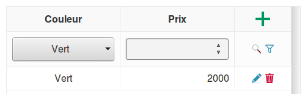

Aide
I. Débuter avec l'application
Tout d'abord, vous allez devoir créer un nouveau projet. Pour ce faire, cliquez sur le bouton Nouveau.
Remplissez les champs de la fenêtre qui apparait comme suit :
Cliquez sur Créer pour finaliser la création du nouveau projet.
II. Ouvrir un projet
Pour ouvrir un projet déjà existant, cliquez sur Ouvrir... puis sélectionnez le fichier que vous voulez charger (Vérifiez qu'il est bien au format .json).
III. Exporter le projet
Cliquez sur le bouton Exporter le projet, sélectionnez "Enregistrer le fichier" puis cliquez sur "OK".
IV. Voir l'aide
Félicitations ! Vous l'avez trouvé sans avoir besoin d'aide !
V. Accèder aux paramètres de l'application
En cliquant sur la roue dentée, la fenêtre suivante apparaitra :
Vous avez la possibilité de changer le nom de votre projet (et de l'enregistrer), et/ou d'effacer les données locales (attention: si vous effacez les données, vous ne pourrez pas les récupérer).
VI. Créer de nouveaux Critères Spéciaux
Cliquez sur le petit + dans la case verte pour ajouter un Critère Spécial. (exemple de gauche)

Remplissez les champs comme montré ci-dessus, puis cliquez sur Enregistrer (exemple de droite).
Note: Vous pouvez ajouter plusieurs variables et plusieurs valeurs. Séparez-les avec des ";".
VII. Ajouter des colonnes de critères au tableau
De même que pour le point précédent, cliquez sur le petit + dans la case verte pour ajouter une colonne.

S'il ne s'agit pas d'un critère spécial : (image de gauche)
Entrez le nom de la colonne, affectez-lui un poids et enfin cliquez sur Ajouter.
S'il s'agit d'un critère spécial : (image de droite)
Cliquez sur le bouton Critère Spécial pour qu'il passe à "Oui", sélectionnez le critère spécial à ajouter, affectez-lui un poids et enfin cliquez sur Ajouter.
Note: Si vous ne trouvez pas votre critère dans la liste déroulante, vérifiez que vous l'avez créé au préalable (si besoin, revenez au point précédent).
VIII. Le tableau de candidats
Par défaut, le tableau est en mode "Affichage". La première ligne (en vert) sert à filtrer les données selon les infos qui y sont indiquées, et en cliquant sur la petite loupe à droite. Le petit entonoir sert quant à lui à vider les filtres de recherche.
Les lignes suivantes (s'il y en a), sont les différents candidats saisis en mode "Ajout". Le petit crayon sur leur droite permet de les éditer, et la poubelle permet de les supprimer.
IX. Ajouter des candidats
Cliquer sur le + vert en haut à droite du tableau fera basculer celui-ci en mode "Ajout". Pour repasser en mode "Affichage", il suffit de cliquer sur la loupe qui a remplacé le + vert.
Dans ce mode, la ligne verte sert à ajouter des candidats, en indiquant les caractéristiques de chacun d'eux, puis en appuyant sur le petit + vert en bout de ligne.
Ce nouveau candidat est alors ajouté à la suite du tableau, et est également éditable et supprimable dans ce mode.
X. Exécuter
Cliquez sur le bouton Exécuter pour lancer le tri des candidats. Ce tri consiste à éliminer les candidats les moins intéressants, tout en conservant tous les candidats dits incomparables.
XI. Réinitialiser
Cliquez sur le bouton Réinitialiser pour supprimer tous les candidats entrés dans le tableau.
XII. Importer un fichier CSV
Cliquez sur le bouton Importer..., sélectionnez votre fichier CSV à charger, et cliquez sur "Ouvrir".
XIII. Exporter un fichier au format CSV
Cliquez sur le bouton Exporter, sélectionnez "Engistrer le fichier" et cliquez sur "OK".